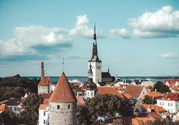
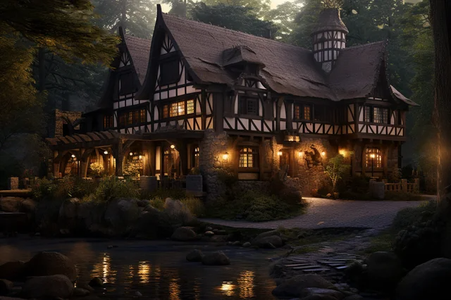

Foto ilustruese



Qyteti i vjetër mahnitës është një nga më të mirët në Evropë, dhe kultura e tij unike – një shkrirje e nordikes dhe Evropës Lindore – është magjepsëse. Ka shumë histori (dhe është e lehtë të mësosh rreth ecjes me udhëzues dhe në muzetë e shkëlqyer të qytetit), disa restorante të mira dhe një vijë bregdetare piktoreske gjithashtu.
1.Qyteti i Vjetër Talin (Trashëgimia e UNESCO-s): Shëtisni nëpër rrugët mesjetare, vizitoni sheshin e bashkisë dhe ngjituni në kishën e Shën Olaf për pamje mahnitëse të qytetit.
2.Kështjella Toompea dhe Katedralja Alexander Nevsky: Eksploroni monumentet politike dhe shpirtërore të Talinit në kodrën Toompea.
3.Pallati dhe Parku Kadriorg:Admironi arkitekturën baroke, shëtisni nëpër kopshte të qeta dhe vizitoni Muzeun e Artit të Estonisë.
4.Telliskivi Creative City: Shijoni artin e rrugës, dyqanet e dizajnit dhe kafenetë e modës në këtë qendër krijuese.
1.Buka e zezë (Must Leib): Një element kryesor i shërbyer pothuajse me çdo vakt.
2.Kiluvõileib: sanduiç me fytyrë të hapur me sprats, vezë dhe barishte.
3.Zierja e mishit estonez: Një pjatë e përzemërt, tradicionale e bërë shpesh me mish derri ose gjahu.
4.Liker Vana Tallinn: Një liker i ëmbël me erëza, i përsosur për një trajtim pas darkës.
1.Bujtina mesjetare në qytetin e vjetër:Qëndroni në ndërtesa historike për një përvojë autentike mesjetare.
2.Hotele moderne në qendër të qytetit: Gjeni akomodime të hijshme me pajisje moderne pranë atraksioneve kryesore.
3.Dizajni apartamente në Kalamaja: Përjetoni jetesën lokale në lagjen hipster të Talinit.
4.Bujtina buxhetore:E shkëlqyeshme për udhëtarët me çanta shpine që kërkojnë qëndrime të përballueshme dhe qendrore.